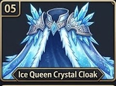
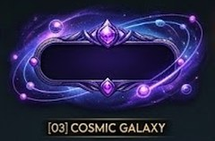
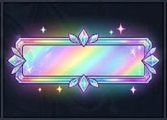
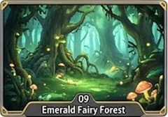

現在：11 月 1 日晚上 11:59 一過，「⏰ … ✖2 ✖1.5」那一整塊 自動消失（已經做好）。上面那顆〔👉 🏠 三年級 25題闖關 請優先完成這一個任務！▶〕是「進去練習的門」，不是加倍的字。
| 選 | 11/1 晚上 11:59 以後 學生 首頁 看到 |
|---|---|
| 甲（建議） | 大按鈕 留著，只拿掉「請優先完成這一個任務！」這一句（學生還可以回家練 25 題） |
| 乙 | 大按鈕 整個也消失（只剩下面的主題和遊戲） |
| 丙 | 全部 照現在（按鈕和那一句都留著） |
✅ 10 月 31 日的限時寶物：說到做到
伺服器的規則：台灣時間 11 月 1 日 0:00 起買不到（＝ 10/31 晚上 11:59:59 是最後一秒）。這一次再改：時間一到，沒買的學生在商城完全看不到（以前會看到灰色「已下架」）；已經買的學生照樣可以用。上面的字也改成「⏳ 10 月 31 號 晚上 11:59 下架」。
老師寫「11/31」：11 月只有 30 天，所以我用 11 月 30 日（星期一）晚上 11:59。如果老師要的是別的日期，請告訴我。
建議：5 類各 1 樣（以前限時的是 必殺特效、寵物、武器、翅膀、坐騎 ➜ 這一次換 光環、披風、名字框、背景、寵物服裝，學生有新鮮感）；價錢 500～1,200（低成就的學生努力 1～2 週也買得到）。金框 ＝ 我建議的；老師也可以換成同一類的另一個號碼。

02-05
04-03 ⭐ 建議
04-09
05-09這是一個隨機分組的實驗（Szpunar, Khan & Schacter 2013，美國哈佛大學 48 位大學生）：大家看同一部 21 分鐘的線上統計學課（切成 4 段，每段大約 5 分半）。
| 組 | 每一段看完以後做什麼 |
|---|---|
| 📝 小測驗組 | 做 6 題小測驗（就像我們的「隨時突擊測驗」） |
| 📖 再讀一次組 | 看題目和答案（不用自己想） |
| ➕ 沒測驗組 | 做算術題（跟課無關） |
| 量什麼 | 📝 小測驗組 | 📖 再讀一次 | ➕ 沒測驗 | 白話 |
|---|---|---|---|---|
| 上課中 突然問「你剛剛在發呆嗎？」說「有」的比例 | 19% | 39% | 41% | 有小測驗，發呆少一半 |
| 自己在投影片上多寫筆記的比例 | 24% | 9% | 7% | 有小測驗，主動寫筆記多 3 倍 |
| 最後總測驗 答對 | 90% | 76% | 68% | 有小測驗，記得最多 |
| 對最後考試 的 緊張（1～5，愈大愈緊張） | 2 | 4 | 3.5 | 有小測驗，比較不緊張 |
⚠ 照實說：前 3 列和緊張 ＝ 實驗 2（48 人）；「90%、76%、68%」那一列是論文把兩個實驗合起來算的（我上一次寫「實驗 2」寫錯了，對不起）。
已經有的：時間一到，答了幾題就送幾題，每一位學生都有成績；老師開的時候可以選 5、10 分鐘。問題：一關的秒懂動畫大約 1 分 10 秒，5 分鐘只看得完 3～4 關的動畫，題目做不到幾題。
| 選 | 做法 | 剩 10 分鐘 | 剩 5 分鐘 |
|---|---|---|---|
| A（建議） | 老師選 5／10 分鐘 ＝ 自動「⚡ 快速複習」：秒懂動畫只演第 1 關，其他關直接做題目；每一題答錯一樣有綠底講解 | 大約 15～20 題 | 大約 8～10 題 |
| B | A ＋ 只抽全班最常錯的關（老師看板錯題分析的前 3 關） | 同上，題目更準 | 同上 |
| C | 照現在（動畫照演，時間到就送） | 大約 6～8 題 | 大約 0～3 題 |
理由：短時間自己想答案（提取練習）比再看一次記得久；而且分好幾天練比一次練很久好 ➜ 下課前 5 分鐘做 8 題，比看動畫有用；動畫留給回家的 25 題闖關。
| 問題 | 答案 |
|---|---|
| 25 題闖關每一題幾分？ | 每一題 4 分，25 題 ＝ 100 分；50 題 每一題 2 分。突擊測驗的題目不算在這 25 題裡 |
| 突擊測驗記在哪裡？ | 另外一筆成績「🎬 秒懂複習 突擊測驗」（三年級 g3m-rv、四年級 mt-rv），老師看板看得到每一題對錯，不加分、不扣 25 題的分 |
| 每個人題目不一樣，公平嗎？ | 每一關的題數一樣、每一題分數一樣（4 分）；題目從同一個題庫抽、同一種難度的題型。學生如果問，老師可以說：「25 題闖關只看 25 題，突擊測驗是另外的練習紀錄。」 |
| 🔓 解碼 的 新「解碼積分」呢？ | 只是遊戲裡的積分（讓學生有感），不算進 100 分（見下面 ⑥） |
建議：25 題闖關的封面加一行大字「🎬 突擊測驗 另外記，不影響 25 題的分數」（老師說「對」我才加）。
(1) ✅ 已經做好：⚡ 解碼積分（正確＋速度＋連對）
| 這一題 | 得到 |
|---|---|
| 全部放對 | ✅ 100 ＋ ⚡ 速度 0～900（看平均每一格花幾秒，所以 3 格和 10 格的題目公平） |
| 平均每一格 1.2 秒以內 | ＋900 ➜ 一題 1,000 |
| 平均每一格 3.6 秒 | ＋450 ➜ 一題 550 |
| 平均每一格 6 秒以上 | ＋0 ➜ 一題 100 |
| 🔥 連續全對 3 題以上 | 這一題 ✖2（最多一題 2,000）；放錯 ＝ 連對重來 |
每一題放對 ➜ 大大的金色「＋880」、速度長條、「✅ 100 ＋ ⚡ 速度 780」、🔥 ✖2；結束頁「🔓 解碼積分」。老師看板的 100 分照舊只看對幾個（公平，見 ⑤）。
(2) 讓拖曳題不無聊：請老師選號碼（可以選好幾個）
| # | 元素 | 學生看到的 |
|---|---|---|
| 1 | 🎁 神秘方塊 | 每一題隨機有 1 個方塊是金色寶箱：放對 ＝ 打開（🪙、這一題 ✖2、或 1 秒「透視」哪一格），每一題都有期待 |
| 2 | 📖 解碼故事 | 每解開 1 句 ＝ 一格漫畫亮起來；8 句解完 ＝ 一個完整的小故事（主角用學生自己的戰士） |
| 3 | 👾 解碼魔王 | 每解開 1 句 ＝ 雷射打魔王一下；愈快放對，打得愈痛（用上面的解碼積分） |
| 4 | 👻 跟自己的影子賽跑 | 畫面上一條「上一次的你」速度線，這一次比上一次快就超過影子（只跟自己比，不跟同學比） |
| 5 | 🔦 記憶解碼 | 每隔幾題一次：英文先亮 3 秒再變暗，要憑記憶放中文（比較難、記得比較久） |
| 6 | 🧩 每一題換一種樣子 | 格子輪流變成：火車車廂、太空艙、寶石、鍵盤…（同樣拖曳，外觀每題不一樣） |
| 7 | 🎰 幸運轉盤 | 連對 3 題 ＝ 轉一次：✖2、＋300、🛡 錯一格不斷連對… |
我建議 1、2、4、5：1 給驚喜、2 給故事（研究：加故事情境的遊戲化效果比較好）、4 只跟自己比（不傷低成就學生）、5 是「必要的困難」（記得更久）。3、6、7 也可以，但比較像裝飾。
老師說得對：「f ➜ ? fox vest ox six」題目已經寫出 f，錯的選項都不是 f 開頭 ➜ 看字形對一下就對，測不到真正的能力（看到／聽到東西 ➜ 知道第一個字母）。對不起。
改法：圖 ＋ 缺第一個字母 ＋ 4 個容易搞混的字母（f／v、b／d／p／q、m／n、r／l、w／v、j／g、s／z／c、k／c）。錯的字母拼出來常常是另一個真的字（🦊 _ox 選 b ＝ box、👃 _ose 選 h ＝ hose、🐷 _ig 選 b ＝ big）➜ 沒看圖、沒學會就會選錯。
⚠ 這一次要用圖：沒有圖（或聲音）就沒辦法考「東西 ➜ 第一個字母」。圖是 emoji（是文字，不是圖片檔），Kahoot、Blooket、Gimkit 題目欄都打得進去；我在雲端不能登入 Kahoot 試，請老師匯入以後先看第 1 題的 🦊 有沒有出來。沒有出來請告訴我，我改成別的題型。
| 哪一份 | 第幾題 | ❌ C43 那一版（鑑別度 低） | ✅ 這一次 改成（綠色 ＝ 正解） |
|---|---|---|---|
| 三年級 第 1 份 | 1 | f ➜ ? fox vest ox six | 🦊 _ox f v b p |
| 三年級 第 1 份 | 2 | q ➜ ? queen girl pig dog | 🦺 _est v f w b |
| 三年級 第 1 份 | 3 | v ➜ ? vest window fox bag | 👸 _ueen q g p d |
| 三年級 第 1 份 | 4 | n ➜ ? nose monkey hat window | 👃 _ose n m h r |
| 三年級 第 1 份 | 5 | y ➜ ? yo-yo jet insect egg | 🪀 _o-yo y j g u |
| 三年級 第 1 份 | 8 | d ➜ ? dog bag pig cat | 🐶 _og d b p g |
| 三年級 第 1 份 | 9 | c ➜ ? cat kite hat bag | 🐱 _at c k s h |
| 三年級 第 1 份 | 13 | _ x o a e u | 🐂 _x o a e u |
| 三年級 第 2 份 | 1 | z ➜ ? zebra six jet nose | 🦓 _ebra z s c j |
| 三年級 第 2 份 | 2 | w ➜ ? window monkey vest yo-yo | 🪟 _indow w v u y |
| 三年級 第 2 份 | 3 | j ➜ ? jet girl yo-yo insect | ✈️ _et j g y z |
| 三年級 第 2 份 | 4 | r ➜ ? rabbit lion window nose | 🐰 _abbit r l w h |
| 三年級 第 2 份 | 5 | a ➜ ? ant egg up ox | 🐜 _nt a e u o |
| 三年級 第 2 份 | 8 | p ➜ ? pig bag dog egg | 🐷 _ig p b d q |
| 三年級 第 2 份 | 9 | f ➜ ? five vest nine six | 🖐️ _ive f v h l |
| 四年級 第 1 份 | 46 | p ➜ ? pig big dip tip | 📌 _in p b t d |
| 四年級 第 1 份 | 47 | t ➜ ? ten den pen bat | 🔟 _en t d p b |
| 四年級 第 1 份 | 48 | d ➜ ? dad bat pat tip | 👨 _ad d b p t |
| 四年級 第 1 份 | 49 | b ➜ ? bat pat dad top | 🦇 _at b p d t |
| 四年級 第 1 份 | 50 | t ➜ ? top dip pot big | ⛺ _ent t d p b |
| 四年級 第 2 份 | 23 | Is your mom a nurse? Yes, she is. She's a ___. nurse doctor nurses an nurse | She's ___ nurse. a an is are |
| 四年級 第 2 份 | 46 | p ➜ ? pin tip den bat | 🐷 _ig p b d q |
| 四年級 第 2 份 | 47 | t ➜ ? tent pen den bat | 🖊️ _en p b t d |
| 四年級 第 2 份 | 48 | d ➜ ? donut tomato potato banana | 🍩 _onut d b p t |
| 四年級 第 2 份 | 49 | d ➜ ? dip tip big pin | 🍲 _ot p b t d |
| 四年級 第 2 份 | 50 | p ➜ ? pot top dad bat | 🐶 _og d b p t |
其他 72 題我再一題一題檢查過（錯的選項都跟答案只差一點）。四年級第 2 份第 40 題的錯選項 Harry（考卷人名）換成 Hurrey。全部題目：https://hsieny627-jpg.github.io/AI-Agent-Open-Code/listen/2026-10-28_X/ ；檔案在 quiz_xlsx/。